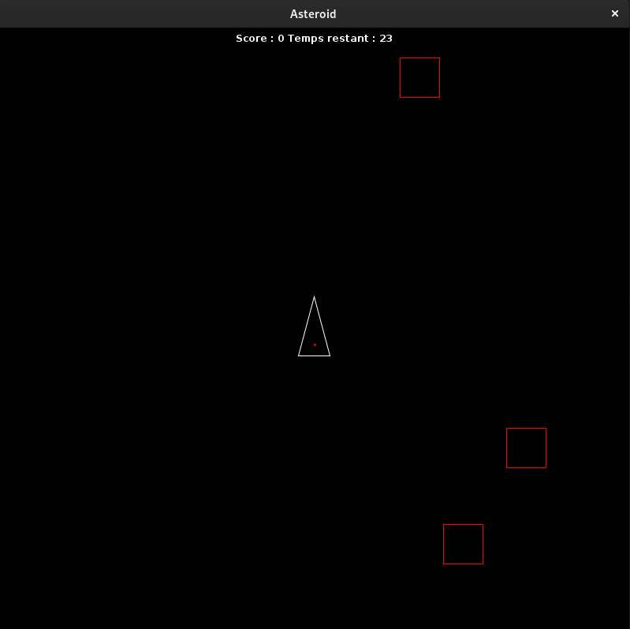
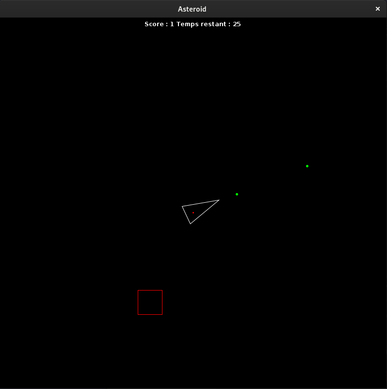

Ce projet, réalisé seul, est le dernier projet de ma première année de BTS SIO. C'est un jeu en Java, utilisant la bibliothèque graphique "Swing".
Pour ce projet, j'ai conçu un jeu inspiré du célèbre jeu rétro "AsteroidGame".
Le joueur contrôle un vaisseau spatial qui est représenté en vue de dessus.
L'objectif du jeu est de détruire un maximum d'astéroïdes en un temps imparti.
Voici à quoi ressemble le jeu :
Lorsque le programme est exécuté, la partie commence et le chronomètre est lancé. Au milieu de l’écran se trouve un polygone qui symbolise notre vaisseau. L’utilisateur peut contrôler ce vaisseau. Il peut le faire pivoter à l’aide des flèches "<" et ">" de son clavier. Les points verts représentent les lasers. Pour les tirer, il suffit d’appuyer sur la touche espace de son clavier. Les carrés rouges définissent les astéroïdes. Elles sont générées dans des zones aléatoires.
Pour détruire un astéroïde, il suffit d'appuyer sur la touche "espace" du clavier pour lancer un missile.
Chaque astéroïde détruit rapporte 1 point.
Ce projet a été selon moi une bonne solution pour revoir et utiliser les différents concepts vus pendant ce module du langage Java, notamment l’aspect objet du langage. Il m’a permis d’approfondir mes connaissances et de constater les différentes possibilités d'utilisation de Java. J’avais quelques difficultés à comprendre l’essence de ce langage de programmation mais grâce à ce projet, j’ai pu m’améliorer et comprendre certaines notions que je n’avais pas totalement acquises en cours.